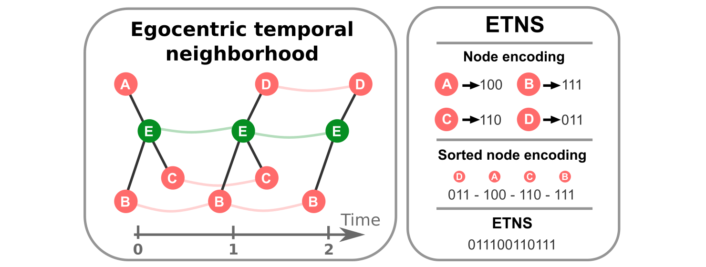
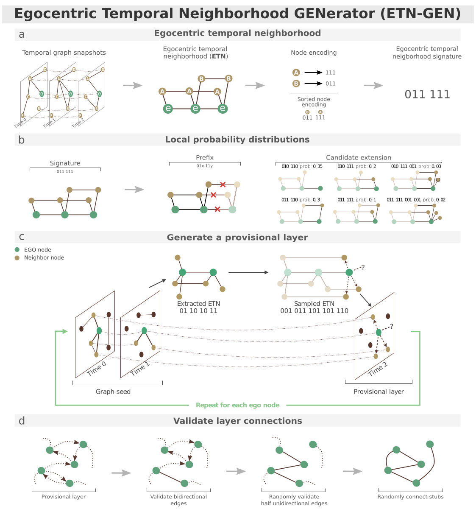
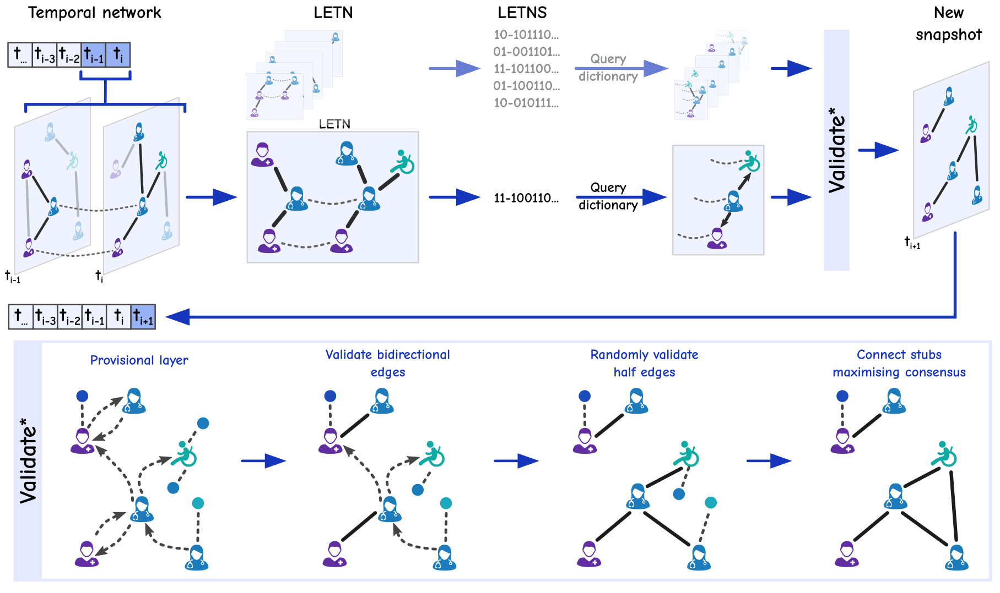
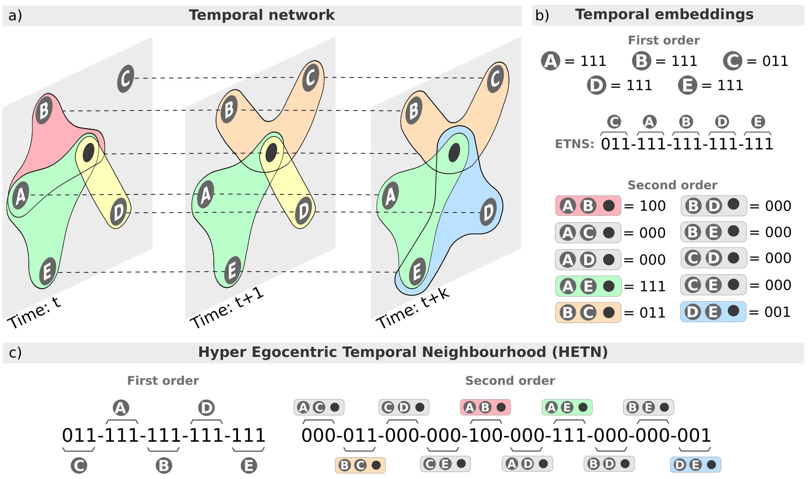

From Temporal Motifs to Community-Aware Temporal Graph Generation
A research line on egocentric temporal neighborhoods: first as a way to mine temporal motifs, then as building blocks for surrogate temporal networks, and finally as a route to labeled and higher-order temporal graphs.
Why temporal graph generation matters
Many systems are not just networks. They are networks that change in time. In face-to-face interaction data, for example, people meet, separate, meet again, and form patterns that depend on time, duration, and social context. Temporal networks model this by representing interactions as a sequence of graph snapshots [2].
This matters because processes such as diffusion, contagion, mobility, and social coordination depend on when interactions happen, not only on whether two nodes have ever been connected. A static graph can preserve who met whom, but it loses the ordering and temporal rhythm of contacts [2].
The practical difficulty is that high-resolution temporal data are expensive to collect, often short in duration, limited in population size, and sometimes hard to share because of privacy concerns. Surrogate temporal networks address this problem by generating synthetic networks that reproduce selected properties of real temporal data without directly reusing the original records [2].
Mining temporal patterns from an ego perspective
The starting point is the egocentric temporal neighborhood. Instead of searching for arbitrary temporal subgraphs from the outside, the method follows one node, called the ego, and records how its neighbors appear and disappear across a short time window [1].
For each neighbor, the method writes a binary code: 1 when the neighbor is connected to the ego at a given snapshot and 0 otherwise. These neighbor codes are sorted and concatenated into an egocentric temporal neighborhood signature. The result is a compact representation of a local temporal pattern [1].
This is the core idea behind egocentric temporal motifs. By encoding neighborhoods as signatures, the mining procedure avoids repeatedly solving graph isomorphism for these local structures. It also keeps the patterns interpretable, because each motif describes how the social neighborhood of one node evolves in time [1].

From motifs to temporal graph generation
The same representation can be used not only to analyze temporal networks, but also to generate them. ETN-gen, the Egocentric Temporal Neighborhood Generator, treats egocentric temporal neighborhoods as building blocks learned from an input temporal network [2].
The generation process has three main steps. First, it extracts egocentric temporal neighborhood signatures from the original network. Second, it estimates local probability distributions: given a short temporal prefix, the model learns which temporal extensions are likely to follow. Third, it grows a new temporal network layer by layer by sampling these extensions for each ego node [2].
Because local samples may request incompatible links, ETN-gen builds a provisional layer and then validates it. Reciprocal requests are accepted, one-directional requests are handled probabilistically, and open stubs are paired to form the final layer. Repeating this procedure produces a surrogate temporal network of the desired length and, in the paper, can also support expansion in the number of nodes [2].

Adding communities and labels
The original ETN-gen method captures local temporal behavior, but it does not explicitly distinguish different kinds of nodes. In social interaction data, that distinction can be important. A hospital network, for instance, contains patients, nurses, and medical doctors, and their interaction patterns need not be interchangeable [3].
Labeled ETN-gen extends the approach by adding node labels to the egocentric temporal neighborhood. A label may come from metadata, such as a role or class, or from a community partition when metadata are not available. The signature then records not only whether a neighbor is present, but also what kind of neighbor it is. The ego label is also attached to the signature [3].
This changes the generative model in a targeted way. The local probability dictionaries become label-aware, so the generator can learn different temporal rules for interactions within and across communities. The community structure is not imposed afterward as a separate global constraint; it is encoded in the local temporal rules used during generation [3].

What the results show
Across multiple face-to-face interaction datasets, Labeled ETN-gen was evaluated against the original networks and compared with ETN-gen and motif-based temporal generation baselines. The evaluation focuses on structural measures that are meaningful for communities, both on aggregated networks and through time [3].
- Labeled ETN-gen better reproduces interactions inside and between communities than unlabeled ETN-gen [3].
- On the High School 2013 dataset, the generated community interaction matrix and temporal modularity trend are closer to the original network than those produced by the compared methods [3].
- The method also improves the reproduction of interaction durations between nodes from different communities [3].
- Across datasets, modularity and label assortativity distributions are closer to the original data when labels are included [3].
The main message is precise: local temporal patterns are useful, but labels make them more faithful when the original system has meaningful roles or communities. Modeling temporal behavior alone is not enough to reproduce community dynamics [3].
Toward higher-order temporal graphs
Pairwise temporal graphs are not always enough. Many social interactions happen in groups, and decomposing every group interaction into pairs can remove information about the group itself. The higher-order extension addresses this by moving from graphs to temporal hypergraphs, where a hyperedge can connect more than two nodes at the same time [4].
Hyper egocentric temporal neighborhoods extend the egocentric idea to these higher-order interactions. In addition to first-order pairwise contacts with the ego, the signature can encode second-order interactions, such as triplets involving the ego and two other nodes [4].
The higher-order paper uses this representation for analysis rather than presenting a full temporal graph generator. Still, it suggests a natural next step: the same building-block logic used by ETN-gen could be adapted to generate temporal hypergraphs, provided that the generator can sample and validate higher-order egocentric signatures [2], [4].

The clean story
This research line follows a simple progression. First, egocentric temporal neighborhoods provide an efficient and interpretable way to mine local temporal motifs [1]. Second, those motifs become building blocks for generating surrogate temporal networks [2]. Third, labels make the generator aware of roles and communities [3]. Finally, higher-order egocentric structures point toward generators that can preserve group interactions rather than only pairwise contacts [4].
The common idea is to learn temporal structure locally, around each node, while keeping enough information to reconstruct realistic global behavior. The labeled extension shows that adding the right mesoscopic information can substantially improve the realism of generated temporal networks when communities matter [3].
References
- [1] Antonio Longa, Giulia Cencetti, Bruno Lepri, and Andrea Passerini. An efficient procedure for mining egocentric temporal motifs. Data Mining and Knowledge Discovery, 36, 355–378, 2022. DOI: 10.1007/s10618-021-00803-2.
- [2] Antonio Longa, Giulia Cencetti, Sune Lehmann, Andrea Passerini, and Bruno Lepri. Generating fine-grained surrogate temporal networks. Communications Physics, 7, 22, 2024. DOI: 10.1038/s42005-023-01517-1.
- [3] Nicolò Alessandro Girardini, Antonio Longa, Gaia Trebucchi, Giulia Cencetti, Andrea Passerini, and Bruno Lepri. Community aware temporal network generation. Applied Network Science, 10, 43, 2025. DOI: 10.1007/s41109-025-00731-w.
- [4] Beatriz Arregui-García, Antonio Longa, Quintino Francesco Lotito, Sandro Meloni, and Giulia Cencetti. Patterns in Temporal Networks with Higher-Order Egocentric Structures. Entropy, 26, 256, 2024. DOI: 10.3390/e26030256.